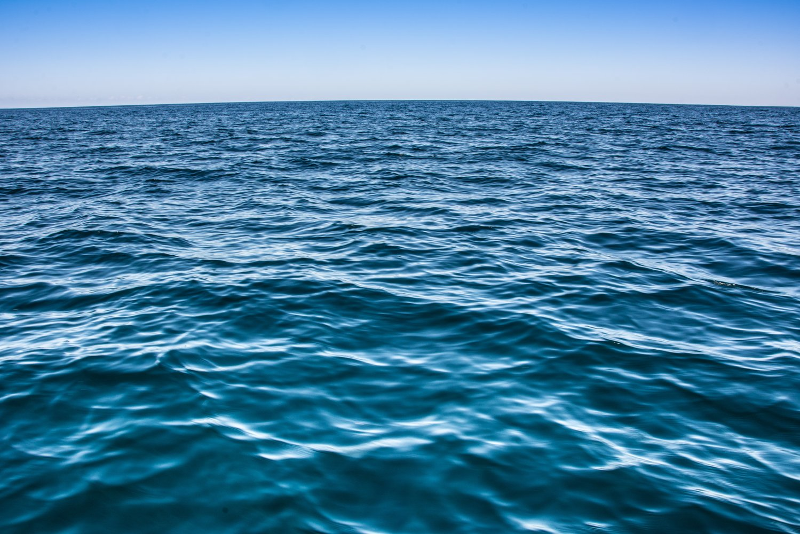
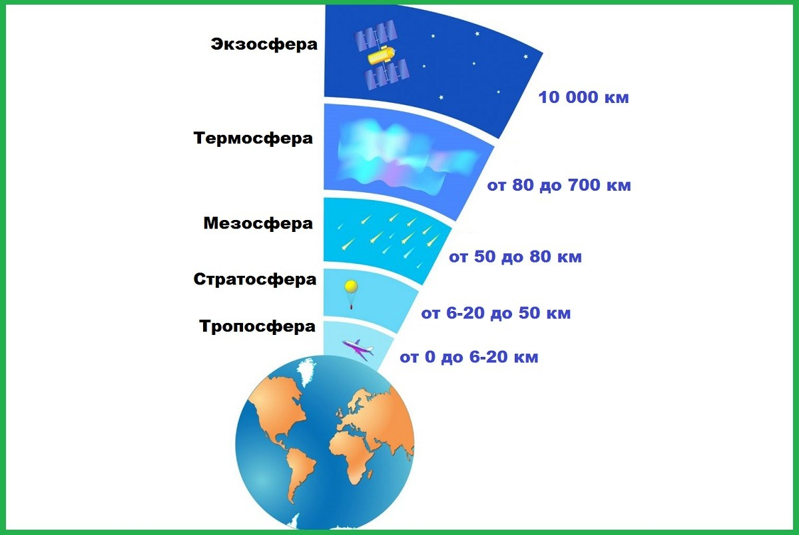
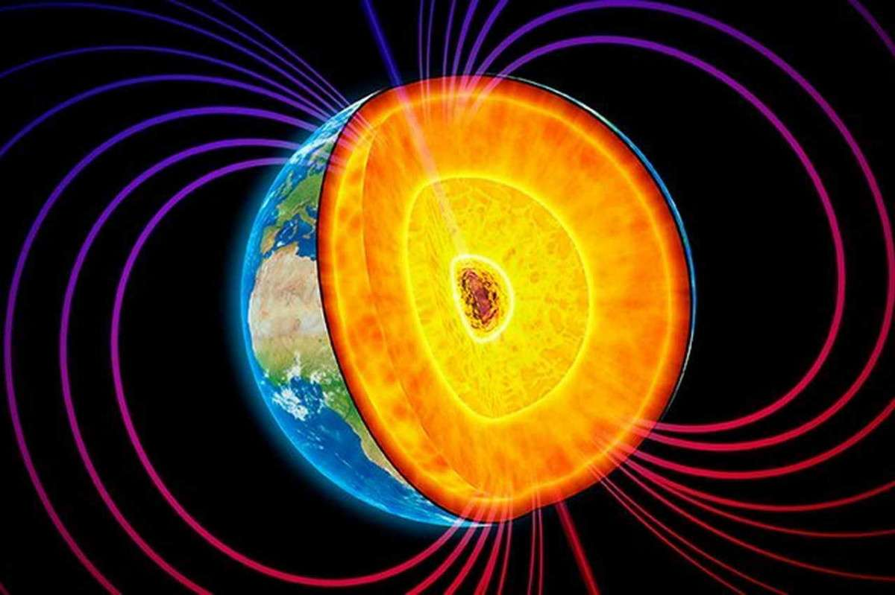
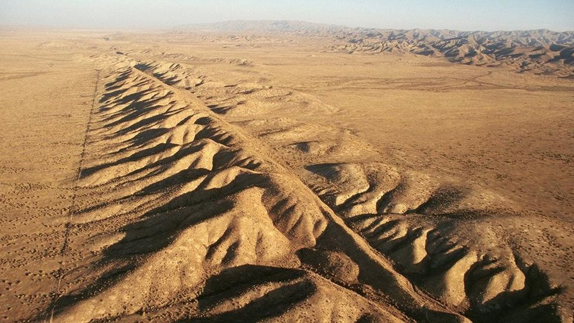

Почему Земля уникальна во Вселенной
Земля — это удивительная планета, на которой существуют условия, благоприятные для жизни. По состоянию на сегодняшний день, это единственное известное нам место во Вселенной, где есть вода в жидком виде, атмосфера, поддерживающая дыхание, и разнообразие живых организмов.
Её уникальность определяется несколькими ключевыми факторами:
- Наличие воды: около 70% поверхности покрыто океанами, которые играют жизненно важную роль в поддержании климата и экосистем. 
- Атмосфера: защитный слой из газов, в том числе кислорода и азота, который фильтрует вредное излучение и поддерживает температуру. 
- Магнитное поле: оно защищает планету от солнечного ветра и космической радиации, сохраняя атмосферу и здоровье живых организмов. 
- Геологическая активность: движение тектонических плит способствует обновлению поверхности и поддерживает сложные биохимические циклы. 
Кроме того, Земля находится в так называемой зоне обитаемости — оптимальном расстоянии от Солнца, где температура позволяет воде оставаться в жидком состоянии. Это — редкое сочетание обстоятельств, которое делает нашу планету настоящим раем для жизни.
Современные исследования и миссии в космос помогают нам лучше понять нашу планету и её особенности, а также искать другие подобные миры во Вселенной.